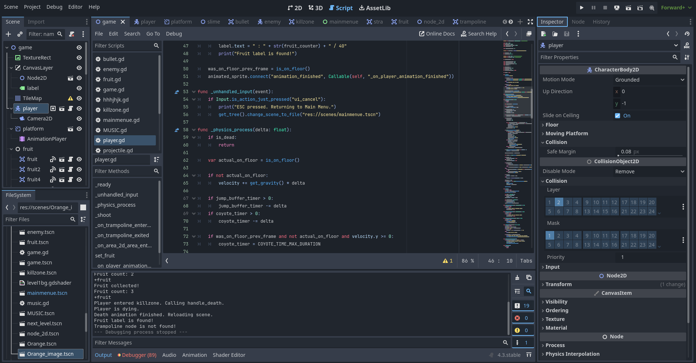

۶. موتور بازی
در این بخش، به بررسی زیرساختهای فنی بازی "Rust and Roots" و قابلیتهای کلیدی موتور بازیسازی گودو (Godot Engine) که این پروژه بر پایه آن ساخته شده است، میپردازیم.

۶.۱. معرفی موتور گودو و قابلیتهای استفاده شده در پروژه
انتخاب موتور گودو برای این پروژه به دلیل انعطافپذیری بالا، معماری قدرتمند و ابزارهای کارآمد آن برای ساخت بازیهای دوبعدی بوده است. قابلیتهای کلیدی که ما از آنها بهره بردهایم عبارتند از:
- معماری صحنه و نود (Scene & Node): ساختار اصلی بازی بر پایه سیستم صحنه و نود گودو استوار است. هر عنصر در بازی، از شخصیت اصلی (پینکو) گرفته تا دشمنان، گلولهها و حتی منوی اصلی، یک صحنه مجزا است. این رویکرد ما را قادر میسازد تا کامپوننتهای بازی را به صورت مستقل توسعه داده و به راحتی در مراحل مختلف از آنها استفاده مجدد کنیم.
- زبان اسکریپتنویسی GDScript: تمام منطق بازی، از حرکت بازیکن گرفته تا هوش مصنوعی دشمنان، با استفاده از GDScript پیادهسازی شده است. این زبان به دلیل سینتکس ساده و شبیه به پایتون و C# و همچنین یکپارچگی عمیق با موتور گودو، سرعت توسعه را به شدت افزایش داده و خوانایی کدها را بالا برده است.
- سیستم فیزیک و برخورد (Physics & Collision): گودو یک سیستم فیزیک دوبعدی قدرتمند ارائه میدهد که ما از آن به طور گسترده استفاده کردهایم:
- CharacterBody2D: برای شخصیت اصلی، پینکو، استفاده شده است تا با استفاده از تابع move_and_slide()، حرکتی روان و مبتنی بر فیزیک داشته باشد.
- Area2D: برای تشخیص همپوشانی بدون ایجاد برخورد فیزیکی استفاده شده است. این نود برای آیتمهای جمعکردنی (سیبها)، مناطق مرگبار و ترامپولینها حیاتی است.
- مدیریت ورودی و انیمیشن: سیستم Input Map گودو به ما اجازه داده تا کنترلهای بازی (حرکت، پرش، شلیک) را به سادگی تعریف و مدیریت کنیم. برای انیمیشنهای پیکسلی شخصیتها و دشمنان نیز از نود AnimatedSprite2D استفاده شده است که قابلیت پخش انیمیشنهای مختلف بر اساس وضعیت بازیکن را فراهم میکند.
- سیگنالها و مدیریت وضعیت سراسری: یکی از قدرتمندترین ویژگیهای گودو، سیستم سیگنال (Signal) آن است که به نودها اجازه میدهد بدون نیاز به ارتباط مستقیم، با یکدیگر صحبت کنند. ما از سیگنالهایی مانند body_entered و animation_finished برای پیادهسازی منطقهای مختلف بازی بهره بردهایم. علاوه بر این، از قابلیت Autoload برای ایجاد نودهای سراسری مانند Music استفاده کردهایم تا موسیقی و افکتهای صوتی در تمام صحنهها در دسترس باشند.